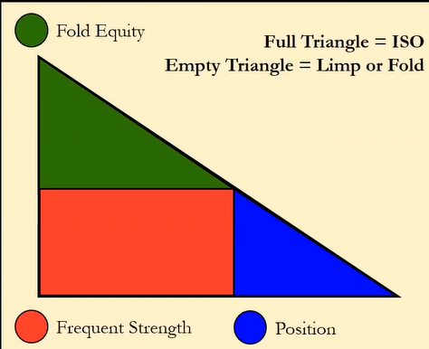
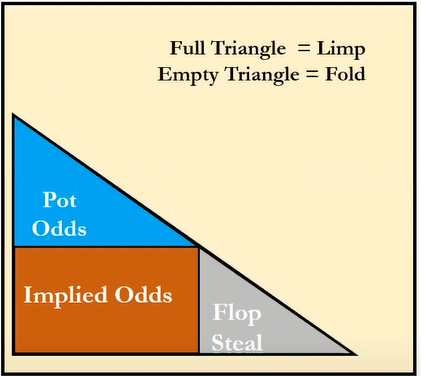

ISO Triangle

The image above is about understanding wether or not to raise after the player before you limps. The bigger the area on the triangle the more important it will be in if you raise or not.
Frequent Strength
Being the most important factor, this mainly decides if you should raise a limper. Frequent strength is more about flopping good pairs and draws than nut potential. Here we look closely at GPP and Versatility. KJs have great frequent strength since they can flop great pairs, flushes, and straights. Q7o has weak frequent strength as the only thing it can flop is a QQ.
Fold Equity
The more Fold Equity we have, the more we would want to raise. We also have higher equity when there is only one villain rather than against 3. It is much better to raise when we don't have to deal with a multi-way pot.
Position
Finally, we have position which, of course, we would like to be in position, as that is always a good thing.
Limping Behind
We have already stated that open limping is bad, but sometimes it is okay to limp behind someone. Sometimes in SB, you can call if multiple people also limped, but it is still better to stick to the 3bet or fold strategy. There are times when limping behind might be okay, like having great pot odds, implied odds, or when might want to steal post-flop.

Here is a similar triangle for limping
The thought process when deciding to limp or raise you look at the ISO Triangle. If you check off the triangle, then you can go ahead and ISO Raise, but if not, then you look at the limping triangle to see if you limp or fold.